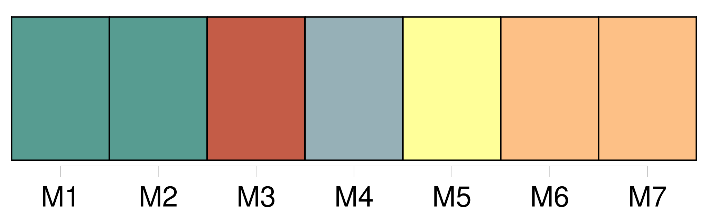
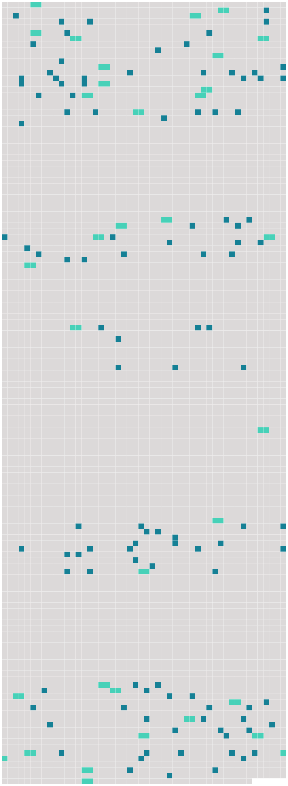

Longueur nb maillons : 143 mentions |
  |
Balthazar, le cheval de [madame François] , une bête trop grasse, tenait la tête de la file. [2 phrases]
[Madame François] , adossée à une planchette contre [ses] légumes, regardait, ne [voyait] rien, dans la maigre lueur jetée à gauche par la petite lanterne carrée, qui n'éclairait guère qu'un des flancs luisants de Balthazar. [1 phrases] [la mère] , avançons!! [2 phrases]
[Elle] s'était penchée, [elle] avait aperçu, à droite, presque sous les pieds du cheval, une masse noire qui barrait la route.
— On n'écrase pas le monde, dit [-elle] , en sautant à terre. [2 phrases]
[Madame François] le crut mort ; [elle] s'accroupit devant lui, lui prit une main, et vit qu'elle était chaude. [2 phrases]
dit [-elle] doucement. [1 phrases]
Celui qui était agenouillé dans ses légumes reprit de sa voix enrouée : [3 phrases] Il regardait [madame François] d'un air effaré, sans bouger.
[Elle] pensa qu'il devait être ivre, en effet. — Il ne faut pas rester là, vous allez vous faire écraser, lui dit [-elle] …… [4 phrases] [Elle] le voyait mieux, et il était lamentable, avec son pantalon noir, sa redingote noire, tout effiloqués, montrant les sécheresses des os. [1 phrases]
[Madame François] pensa qu'il était vraiment trop maigre pour avoir bu. [1 phrases]
demanda-t [-elle] de nouveau. [3 phrases]
[La maraîchère] le vit qui s'appuyait en chancelant sur le brancard de la voiture. [2 phrases] Alors, [elle] prit une voix brusque et comme mécontente.
[Elle] le poussa, en disant : [1 phrases]
… [Je] vais aux Halles, [je] vous déballerai avec [mes] légumes.
Et, comme il refusait, [elle] le hissa presque, de [ses] gros bras, le [jeta] sur les carottes et les navets, tout à fait fâchée, criant : Vous [m'] embêtez, [mon] brave …… Puisque [je] vous dis que [je] vais aux Halles!!
Dormez, [je] vous réveillerai. [Elle] remonta, [s'adossa] contre la planchette, assise de biais, tenant les guides de Balthazar, qui se remit en marche, se rendormant, dodelinant des oreilles. [2 phrases]
Celui qui avait interpellé [la maraîchère] s'allongea, en grondant : [2 phrases]
… [Vous] avez de la constance, [vous] , [la mère] ! [1 phrases] L'homme que [madame François] venait de recueillir, couché sur le ventre, avait ses longues jambes perdues dans le tas des navets qui emplissaient le cul de la voiture ; sa face s'enfonçait au beau milieu des carottes, dont les bottes montaient et s'épanouissaient ; et, les bras élargis, exténué, embrassant la charge énorme des légumes, de peur d'être jeté à terre par un cahot, il regardait, devant lui, les deux lignes interminables des becs de gaz qui se rapprochaient et se confondaient, tout là-haut, dans un pullulement d'autres lumières. [1 phrases] — [Je] suis de Nanterre, [je] me nomme madame François, dit [la maraîchère] , au bout d'un instant. Depuis que [j'] ai perdu [mon] pauvre homme, [je] vais tous les matins aux Halles. [4 phrases]
Je [vous] demande excuse ; je suis si fatigué, que cela m'est pénible de parler. [1 phrases] Alors, [elle] se tut, lâchant un peu les guides sur l'échine de Balthazar, qui suivait son chemin en bête connaissant chaque pavé. [36 phrases]
cria brusquement [madame François] Et, comme il ne bougeait pas, [elle] monta, le [secoua] [2 phrases]
[La maraîchère] le fit descendre, en lui disant : Il [l'] aida. [3 phrases] Combien avez [-vous] de mètres?? [1 phrases] Il délivra un bulletin à [madame François] , [qui] sortit des gros sous d'un petit sac de toile. [1 phrases] [La maraîchère] avait pris Balthazar par la bride, le poussant, acculant la voiture, les roues contre le trottoir. Puis, la planche de derrière enlevée, après avoir marqué [ses] quatre mètres sur le trottoir avec des bouchons de paille, [elle] pria Florent de [lui] passer les légumes, bottes par bottes. [Elle] les rangea méthodiquement sur le carreau, parant la marchandise, disposant les fanes de façon à encadrer les tas d'un filet de verdure, dressant avec une singulière promptitude tout un étalage, qui ressemblait, dans l'ombre, à une tapisserie aux couleurs symétriques.
Quand Florent [lui] eut donné une énorme brassée de persil, qu'il trouva au fond, [elle] lui demanda encore un service. — Vous seriez bien gentil de garder [ma] marchandise, pendant que [je] vais remiser la voiture …… [1 phrases] Il [lui] assura qu' [elle] pouvait être tranquille. [1 phrases] Il s'assit contre un tas de choux, à côté de la marchandise de [madame François] , en se disant qu'il était bien là, qu'il ne bougerait plus, qu'il attendrait. [18 phrases] Cependant, [madame François] était revenue.
[Elle] discutait violemment avec un homme qui portait un sac sur l'épaule, et qui voulait [lui] payer [ses] carottes un sou la botte. [6 phrases] [Elle] s'adressait à Florent. [12 phrases]
[Elle] se leva, en voyant une femme penchée sur [ses] navets. [1 phrases]
dit [-elle] amicalement. [22 phrases] [Madame François] causait avec la mère Chantemesse, debout, discutant le prix de la botte de navets. [30 phrases]
Quand elle fut partie, [madame François] vint se rasseoir à côté de Florent, en disant : [J'] étais gamine, qu'elle achetait déjà ses navets à [mon] père. Et pas un parent avec ça, rien qu'une coureuse qu'elle a ramassée [je] ne sais où, et qui [la] fait damner …… [1 phrases] [Moi] , [je] ne pourrais pas rester dans ce diable de Paris, toute la journée, sur un trottoir. [2 phrases]
demanda-t [-elle] [3 phrases] [Elle] était tout près de lui, [elle] lui semblait pourtant bien honnête, avec [sa] grande figure calme, serrée au front par un foulard noir et jaune. [Elle] pouvait avoir trente-cinq ans, un peu forte, belle de [sa] vie en plein air et de [sa] virilité adoucie par des yeux noirs d'une tendresse charitable.
[Elle] était certainement très-curieuse, mais d'une curiosité qui devait être toute bonne.
[Elle] reprit, sans s'offenser du silence de Florent : [4 phrases]
Tout en parlant, [elle] ne le quittait pas des yeux, apitoyée sans doute par son extrême maigreur, sentant que c'était un « monsieur, » sous sa lamentable défroque noire, n'osant lui mettre une pièce blanche dans la main.
Enfin, timidement : [1 phrases]
[Elle] parut heureuse, [elle] répéta plusieurs fois, comme pour se rassurer [elle -même] sur son sort :
bien, alors, [vous] n'avez qu'à attendre le jour. [38 phrases] Cependant, [madame François] s'était débarrassée de [sa] marchandise.
Il [lui] restait quelques bottes de carottes, quand Lacaille reparut, avec son sac. [2 phrases] — [J'] étais bien sûre de vous revoir, vous, répondit tranquillement [la maraîchère] Voyons, prenez [mon] reste. [4 phrases] [Madame François] était pressée de s'en aller.
Lorsque Lacaille se fut éloigné, avec ses carottes dans son sac : [4 phrases]
Quand [madame François] parlait de Paris, [elle] était pleine d'ironie et de dédain ; [elle] le traitait en ville très-éloignée, tout à fait ridicule et méprisable, dans laquelle [elle] ne consentait à mettre les pieds que la nuit.
— À présent, [je] puis m'en aller, reprit [-elle] en s'asseyant de nouveau près de Florent, sur les légumes d'une voisine. [4 phrases]
— [Je] vais m'en aller, répéta [madame François] [Elle] s'intéressait à cet inconnu, [elle] le sentait souffrir, sur ce trottoir, dont il n'avait pas remué. [Elle] lui fit de nouvelles offres de service ; mais il refusa encore, avec une fierté plus âpre. [1 phrases] Et, comme [elle] tournait la tête, il mit la carotte dans sa bouche. Mais il dut la garder un instant, malgré l'envie terrible qu'il avait de serrer les dents ; [elle] le regardait de nouveau en face, [elle] l'interrogeait, avec [sa] curiosité de brave femme. [2 phrases]
[La maraîchère] allait décidément partir, lorsqu'une voix forte dit tout à côté d' [elle] : [3 phrases] — Bonjour, monsieur Claude, répondit gaiement [la maraîchère]
Vous savez, [je] vous ai attendu, lundi ; et comme vous n'êtes pas venu, [j'] ai garé votre toile ; [je] l'ai accrochée à un clou, dans [ma] chambre. — [Vous] êtes trop bonne, [madame François] , j'irai terminer mon étude, un de ces jours …… [1 phrases]
Est -ce que [votre] grand prunier a encore toutes ses feuilles? [1 phrases] — C'est que, voyez [-vous] , je le mettrai dans un coin du tableau. [6 phrases]
[La maraîchère] reprit : [2 phrases]
Et comme [elle] partait, présentant Florent au jeune peintre : [2 phrases] [Elle] s'en alla enfin, heureuse de laisser les deux hommes ensemble. [1 phrases]
La présentation de [madame François] suffisait ; et, avec la familiarité d'un flâneur habitué à toutes les rencontres de hasard, il lui dit tranquillement : |
 |
La ressource peut être téléchargée sur la page Ortolang
Si vous avez des questions ou vous voyez des erreurs, merci d'envoyer un mail à silvia.federzoni89@gmail.com
Site développé par S. Federzoni (contact)